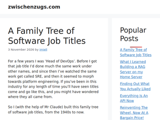

"In the United States the Copyright Office actually has guidance on this that I feel most people aren’t aware of.https://www.copyright.gov/ai/Copyright-and-Artificial-Intell...An excerpt, with emphasis mine:• Questions of copyrightability and AI can be resolved pursuant to existing law, without the need for legislative change.• The use of AI tools to assist rather than stand in for human creativity does not affect the availability of copyright protection for the output.• Copyright protects the original expression in a work created by a human author, even if the work also includes AI-generated material.• Copyright does not extend to purely AI-generated material, or material where there is insufficient human control over the expressive elements.• Whether human contributions to AI-generated outputs are sufficient to constitute authorship must be analyzed on a case-by-case basis.• Based on the functioning of current generally available technology, prompts do not alone provide sufficient control.• Human authors are entitled to copyright in their works of authorship that are perceptible in AI-generated outputs, as well as the creative selection, coordination, or arrangement of material in the outputs, or creative modifications of the outputs.• The case has not been made for additional copyright or sui generis protection for AI- generated content.I am sure there will be many more legal battles and probably legislation about this to come."
"By this logic, shouldn't any code using an open-source framework or language also be open source? Even before AI, devs learned from Stack Overflow and plenty of open source code.You're confusing writing code with software engineering. Devs never just wrote code, they took ownership of the outcome. Business owners put their money on the line for product decisions.To say that just because devs or founders use AI to write code, the code is no longer their intellectual property is ridiculous. Humans take responsibility for the outcome and are willing to accept the losses. AI can't do that. AI doesn't have any stakes in the output it generates, humans do."
"My two cents. I'm on both sides of this (as I'm sure many here are): AI was trained on my open-source code. Also I use AI to build proprietary code.My stance is that AI is a tool, like a compiler is a tool. AI generated code should not be considered public domain or forced to be open source or ineligible for copyright.Even if AI writes every line, the direction and engineering that I put in has been substantial (current project in mind), months of heavy AI use for heavy refinement and direction of complex software. That human input, even if it isn't lines of code, counts for a lot.Furthermore, what does society gain from my code being made open source if anybody else could just themselves go to Claude Code and ask for the same thing? Just go have Claude make one for you. Is it the token cost barrier? That is IMHO negligible compared to the value that we are getting out of AI right now. We are in a golden moment, anybody can create amazing things, rapidly, at low cost and little barrier to entry."
"If they are price fixing, eff them.Finally secure a research grant and had budgeted money for a new compute workstation and the RAM prices are killing my budget, because I'd love to get at least 256 GB of RAM and that's 4-5 grand now. Ridiculous, especially since I'd like to have a GPU in it with at least 32Gb of VRAM for medical image model training, so that is also like 4-5 grand too.Do I wait two years and hope, or pay, isthe question I keep asking myself."
"It's a 3 way prisoners dilemma market where the prisoners have been caught explicitly colluding before. Now they do not need explicit colluding anymore as the pattern and outcome has been established already and the "jail" is as good as closed to new entrants. Clearly the expected "market" is not working in this niche, so something will have to be done about it."
"A machine-drafted AI news website should not be eligible for submission here."
"Anyone who’s been around Wall Street long enough could have told you Lutnick has had questionable morals and ethics even against subpar standards among finance professionals."
"https://wallhop.io/https://www.nytimes.com/2026/11/15/us/pol...Lutnick is a TRAITOR, he manipulated the system to benefit his company, at the expense of the National Security of the US, by investing in this Malaysian data center which in effect, allowed the Chinese military a source to run their code on Blackwells, and if he's not arrested for treason and a stop put to it, all the next generations of advanced Nvidia GPUs."
"A large portion of the world is resigned to enslavement (through economic and violent coercion and through PR) by megalomaniacs who see the world from a nation-state perspective and who are personally hyper-competitive."
"I personally operate a fairly advanced closed-loop chlorination system, and this is beyond screwed up.These systems can easily fail, and they tend to fail in a way that causes them to measure low or zero chlorine and thus overdispense chlorine. More below on why.First, this means that an operator must always ensure safety, both against excessive chlorine and against insufficient chlorine. In a commercial context, that means that a real human (or maybe a totally different sensor design, e.g. a colorimetric sensor) need to measure the pool chlorine level, preferably with a high quality titration (drop test) every day before opening the pool. They should probably record the result in pen on water resistant paper, but this part is icing on the cake.Second, hoping that an email gets noticed is ridiculous. If you do not have positive confirmation that the pool is safe to open, don’t open it.Third, the systems should be sized so that they cannot overdose quickly. The maximum dispensing rate should be such that hours of continuous operation would be required to reach an uncomfortable level, let alone a dangerous level. (Hot tubs are sort of an exception here.)Fourth, everyone should be using a reasonable amount of CYA in their pool. Even at a lowish level of 30ppm CYA it takes a lot of chlorine to become dangerous unless the operator has also lost control of pH. I realize that some codes are confused about this.Fifth, chlorine is smelly. Someone should have noticed, even just casually. Admittedly, lots of swimmers may be conditioned to stinky pools, and checking for safety isn’t their job. But the staff should notice.Sixth, the systems I’ve seen beep when there’s an alert. It’s easy to add flashing lights, too. (In fact, the system I’m familiar with automatically shuts down if it feeds for more than X minutes without reaching the setpoint, and you cannot turn this feature off. You can, however, defeat it by switching the power to the whole controller.)—- sensors —-Actual free chlorine sensors intended for pools use an amperometric probe immersed in iodide solution or gel, separated from the pool water by a fancy membrane. Free chlorine oxidizes iodide to iodine, and the sensor measures the iodine concentration. If the membrane fails (or general wear and tear or excessive pressure swings) cause the iodide to be lost, then the chlorine can’t react and the sensor reads zero (or low if there’s tiny bit of iodide left).Interestingly, these sensors are rather expensive devices that appear to mostly come from France and Germany. The Chinese vendors seem to be rebranding European parts (!), and the major US vendor is very clearly reselling a French company’s product.There are some vendors who sell a cheap (or absurdly marked up) potentiometric ORP-based closed-loop system. In my considered opinion, these are worse than useless."
"This is 100% fault of the hotel, not of Microsoft. It’s unacceptable that the communications regarding such a dangerous thing totally rely on email, without any backup or double check."
"I'm not even going to read the article. If your hotel depends on some cloud service to prevent chlorine gas poisoning you're doing something terribly wrong. Full stop. I don't know anything about the laws in Germany but this is dangerously close to libel in the US.Disclaimer: I work in Azure, this is not a defense of the outage and I didn't read the submitted article."
"When I actually went to the source for the 240hz claim, I didn’t reach the same conclusion as the testers?Maybe they just let their rigol scope spit out 240hz, but 480hz worst case and I would actually say 960hz. I think what’s happening with the tandem oled is they both pwm at 480hz and 180 degrees out of phase giving effective 960hz when both are in use. Which appears to be most of the usable brightness.Edit: I’m so confused.“The PWM behavior is interesting, because we can see DC-dimming for all brightness levels. Usually, OLED panels use DC-Dimming only at higher brightness levels. The frequency is very low at 240 Hz, however, and this might be an issue for sensitive users, despite the DC-dimming. ” https://www.notebookcheck.net/Amazing-OLED-panel-Apple-MacBo..."
"I'm glad that this is bringing attention to flicker sensitivity.Here are some other things that people are sensitive to: - CRI on white LEDs (and flourencents). CRI is how clean the spectrum is in comparison to the sun or a incandescent bulb, where the specturm is completely even. There are some CRI >=95 LEDs that are fine for most people however.- Motion blur Motion blur on LCDs (such as ~50% of Nintendo Switch 2s) can hurt eyes trying to keep track of what is going on."
"As someone who’s had a concussion, this is really interesting. For me this is how any screen was to me, not just bright OLED ones. Even more interestingly it’s essentially only screens— backlist posters at the mall (paper with a backlight) still affect it but less so. To me perhaps it’s focusing on something on a screen that does this, but it’s really interesting to see this affect the general population.It’s also odd to think about lack of ability to concentrate, and I wonder if screens cause this optically somehow but to a less noticeable degree even when less intense than this new one? (Independent distracting contents)I noticed that adding a severe red filter to all my screens helped me significantly with the concussion and am also curious about that, would that impact the intensity of a refresh perhaps? Is blue light specifically the problem? I’m unsure but have a plethora of subjective experience.I’m glad for this to enter public consciousness a bit and would love to see more research on the screen itself impacting our brain."
"If the price of the RTX 6000 (96gb blackwell gpu) drops to $2000 (original MSRP $8000, currently $16,000 usd due to "scarcity") then, all of a sudden, "we have ai at home" becomes real and why would you ever pay for a subscription for your company/family when you can run Qwen Flash Next (which runs great on consumer GPU via software like Strata) forever for free?Engineering types and power users need not apply,but For Everyone Else, the "normies", Qwen Flash Next is probably "640k is enough for anyone" territory.IPO, valuation etc depend heavily on frontier, or "good enough" AI to need to run on commercial grade GPUs. If Qwen Flash Next is good enough and runs on a $2000 GPU, why would you pay $20/30/100/200 per month in perpetuity?I wouldn't pick Qwen Flash Next to add kernel namespacing and cgroups v2 to my custom OS kernel, but it will happily implement the Plan.md that Fable 5.2 wrote for a dollar."
"We had a huge thread about this yesterdayNvidia allegedly engineered scarcity by funding AI startups to buy its GPUs (techpowerup.com)https://news.ycombinator.com/item?id=50493251"
"Not speaking about the possible knowledge of smuggling in contravention of law, marital infidelity, and possibility getting mixed up with an intelligence agent, but I don't see the circular financing thing as a problem. Maybe I'm misinformed.But weren't they were investing money in companies to help them grow and in turn buy more of their product. Of course Nvidia wants to stimulate demand of their product. I don't think this was nefarious. There is no free lunch, the risk of them never getting that money back is real with a lot of these pie in the sky AI companies. How is this anticompetitive? It's all of these SPVs that meta, google, and others are using that I think needs to be investigated and punished by wall street.If you think that's wrong, USE YOUR WORDS, I'm open to reason. Down voting with no response or making jeers is not effective communication."

"Recently I spoke to someone who wanted to know what they should call themselves seeing as they never learned software development, formally or otherwise, but that's not stopping them from releasing AI-powered Python projects in GitHub. I suggested Project Manager, but they took offense to that because (I think) they wanted to hear Software Engineer in order to apply to those jobs. My counter-argument was that, legal rules aside, a S.E. should be able to differentiate good code from bad, but my suggestion wasn't super well received.The point being: I'm always amazed at the cross-purpose impulse of arguing "the title is not important" while, simultaneously, really wanting to use the title."
"Scrum and Agile seem to be dying. I had a Product Owner and Scrum Master cert for years on my resume but i've dropped it from my current. Feels now like the ancient webmaster title of the mid 90s. Made for another timeline which is not more relevant.DevOps is another sad story as it was a saner approach to get people skilled for both dev and ops but turns out people don't like learning new skills as much as they claim. So its meaning differed from org to org and even within the same company."
"So far in my career:- DevOps Engineer (Junior, Senior, Staff)- Systems Development Engineer- DevOps Team Manager- Cloud Infrastructure Engineer- Site Reliability Engineer (+Lead)All have been meaningless except for Cloud Infrastructure Engineer. The rest described a generalist who knows how to deal with ambiguity and (usually) has the trust with things like AWS root account credentials. Most organisations have no idea what real DevOps is. If they did, they wouldn’t hire for a “DevOps Engineer”"
"It seems like every time Meta (Facebook) hits the front page of Hacker News it's for something negative."
"How did they access users photos without consent? Did they run some exploit on Android to access the photo without showing the user the consent prompt? The article is really lacking in details."
"Is there a running total of how much the EU and member states rake in through tech company fines per year? It has to be pretty high by now.Edit: I see another commenter linked https://enforcementtracker.com/. Very useful resource"
"I don't think they should be keeping data that's not involved in an active warrant.However, if they do anyway, there should be strong victims' rights protections so that the data is actually used during investigations.There was a string of burglaries in our area a few years ago, and panopticon N-1 (Google Map's auto recording of all phone GPS traces for marketing information) could have found the perpetrators pretty much instantly.They hit rural outbuildings in the middle of the night on camera, so timestamps were precise, but faces were obscured. A reverse geofence warrant keyed on time of arrival / departure would have narrowed it down to just the crooks with extremely high probability, and other details in the videos would have corroborated the GPS traces.None of the victims were politically connected, so the police couldn't (by policy) run the reverse GPS lookups. This is the worst of both worlds: Our data is recorded to be used against us later, but if ever it would be useful, we do not have access to it. The same is true for vehicle black boxes / cameras. They record a few seconds before airbag deploy, but you usually are not allowed to access them as part of an insurance dispute (even the ones from your own car)."
"Flock and ALPR usage is solved in USA if every state adopts New Hampshire's law:* Illegal to collect every plate for later analysis* Illegal to collect anything except for license plates (no drivers, pedestrians, etc.)* Must delete "non hit" plate images within 3 minutes* Strict forbidden to upload "non hit" camera imagery off the deviceI would add that it should also require a warrant to access the ALPR data, but it's a great start.https://gc.nh.gov/rsa/html/XXI/261/261-75-b.htm"
""Our brief details the vast, interconnected network of ALPRs that constantly track drivers around the country and argues that this tracking is a “search” under the meaning of the Fourth Amendment."Totally agree with the EFF here, many thanks to them defending the Constitution, hope they win."
"It scores a 43 on Artificial Analysis with an average cost of $3.27 [1]. For reference, GPT-6.1 Sol (medium) gets a 46 with an average of $0.36.[1]: https://artificialanalysis.ai/models/qwen4-max"
"Qwen4-Max pelicans at four reasoning efforts (none, low, high, xhigh): https://tools.simonwillison.net/markdown-svg-renderer?url=ht...For comparison, here's one I got from Qwen3.8 Max (at default reasoning effort): https://simonwillison.net/2026/Jul/20/afraid-of-chinese-mode...This inspired me to re-run pelicans through 3.8 Max - but OpenRouter has qwen3.8-max-prime and qwen3.8-max-0902 - prime is twice the price and faster - so I went with the 0902 one.Turns out Qwen4-Max has a none setting, but 3.8 Max didn't allow disabling reasoning - you had to pick from these five levels instead: minimal, low, medium, high, xhigh.Here are those 3.8 Max 0902 pelicans: https://tools.simonwillison.net/markdown-svg-renderer?url=ht... - they're mostly not as good as 4, but I prefer the 3.8 xhigh one."
"I hope they are able to serve 4 faster. Qwen 3.8 is a great model but I’ve regretted including it in the battle system for opencode [1] we have been building because it scores so low.And it’s a shame because the only reason it scores so low is that it’s slooooow. (Like 30 tokens per second vs opus near 80.) If you exclude voting, Qwen 3.8 does well.(We allow early voting contrary to Arena.ai because I think it makes sense for agents, where it doesn’t for chat. This means our data takes speed into account.)Also, it would be ideal if they served this with third parties. Part of the slowness with 3.8 is just not a lot of providers. Their open source version is much faster, but we couldn’t include it because it doesn’t handle images (another own goal by Alibaba).[1]: https://agentduel.com/leaderboard"


All AI-generated code should be Open Source
"In the United States the Copyright Office actually has guidance on this that I feel most people aren’t aware of.https://www.copyright.gov/ai/Copyright-and-Artificial-Intell...An excerpt, with emphasis mine:• Questions of copyrightability and AI can be resolved pursuant to existing law, without the need for legislative change.• The use of AI tools to assist rather than stand in for human creativity does not affect the availability of copyright protection for the output.• Copyright protects the original expression in a work created by a human author, even if the work also includes AI-generated material.• Copyright does not extend to purely AI-generated material, or material where there is insufficient human control over the expressive elements.• Whether human contributions to AI-generated outputs are sufficient to constitute authorship must be analyzed on a case-by-case basis.• Based on the functioning of current generally available technology, prompts do not alone provide sufficient control.• Human authors are entitled to copyright in their works of authorship that are perceptible in AI-generated outputs, as well as the creative selection, coordination, or arrangement of material in the outputs, or creative modifications of the outputs.• The case has not been made for additional copyright or sui generis protection for AI- generated content.I am sure there will be many more legal battles and probably legislation about this to come."
"By this logic, shouldn't any code using an open-source framework or language also be open source? Even before AI, devs learned from Stack Overflow and plenty of open source code.You're confusing writing code with software engineering. Devs never just wrote code, they took ownership of the outcome. Business owners put their money on the line for product decisions.To say that just because devs or founders use AI to write code, the code is no longer their intellectual property is ridiculous. Humans take responsibility for the outcome and are willing to accept the losses. AI can't do that. AI doesn't have any stakes in the output it generates, humans do."
"My two cents. I'm on both sides of this (as I'm sure many here are): AI was trained on my open-source code. Also I use AI to build proprietary code.My stance is that AI is a tool, like a compiler is a tool. AI generated code should not be considered public domain or forced to be open source or ineligible for copyright.Even if AI writes every line, the direction and engineering that I put in has been substantial (current project in mind), months of heavy AI use for heavy refinement and direction of complex software. That human input, even if it isn't lines of code, counts for a lot.Furthermore, what does society gain from my code being made open source if anybody else could just themselves go to Claude Code and ask for the same thing? Just go have Claude make one for you. Is it the token cost barrier? That is IMHO negligible compared to the value that we are getting out of AI right now. We are in a golden moment, anybody can create amazing things, rapidly, at low cost and little barrier to entry."